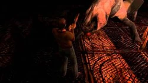
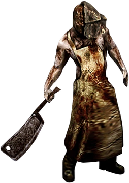
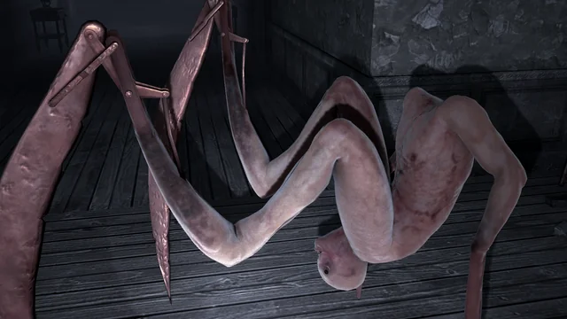
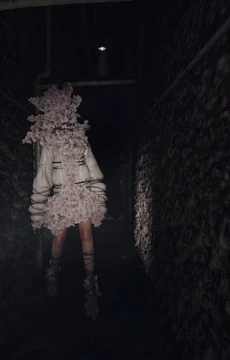

Sobre as Criaturas
Os monstros de Silent Hill são manifestações físicas da culpa, trauma, medo e sofrimento psicológico dos personagens. Cada criatura carrega um forte simbolismo emocional e psicológico.
Pyramid Head
O inimigo mais famoso da franquia e o símbolo máximo do terror psicológico nos videogames. Conhecido formalmente como "Red Pyramid Thing", ele é uma força implacável carregando uma espada colossal e usando um capacete piramidal metálico.
Simbolismo: Ele não é um monstro real da cidade, mas sim uma criação exclusiva do subconsciente de James Sunderland. Representa o desejo desesperado de James de ser punido por seus pecados, funcionando como um carrasco pessoal alimentado por sua imensa culpa e negação.
Bubble Head Nurse
Um dos monstros mais tradicionais do universo de Silent Hill, caracterizado por roupas de enfermeira distorcidas, movimentos espasmódicos e rostos completamente cobertos ou inchados, geralmente atacando com tubos de metal ou facas.
Simbolismo: Embora apareçam em várias formas na série, em Silent Hill 2 elas refletem diretamente as frustrações de James. Elas simbolizam a ansiedade, a repressão sexual e o conflito interno gerados durante o longo período em que sua esposa esteve internada no hospital sob cuidados médicos.
Lying Figure
A primeira criatura que o jogador enfrenta nas ruas enevoadas de Silent Hill 2. É uma figura humanoide aparentemente presa em uma camisa de força feita de sua própria pele texturizada, que se move de forma rastejante e agonizante pelo chão liberando vapores venenosos.
Simbolismo: Representa o sufocamento emocional, a agonia e o estado de total confinamento psicológico em que o protagonista se encontrava enquanto lidava com a doença terminal de Mary.
Abstract Daddy
Uma das visões mais perturbadoras e desconfortáveis de toda a franquia. Visualmente, assemelha-se a duas figuras humanas deitadas em uma estrutura retangular que simula uma cama, cobertas por uma membrana de pele orgânica.
Simbolismo: Este monstro é uma projeção dos traumas mais profundos de Angela Orosco. Ele materializa de forma crua o histórico de abusos físicos e psicológicos extremos sofridos por ela na infância dentro do ambiente familiar.
Valtiel
Uma entidade humanoide de pele amarelada que veste um avental cerimonial e possui movimentos mecânicos e tremores violentos na cabeça. Ele raramente ataca o jogador diretamente, gastando seu tempo girando válvulas e observando os cenários.
Simbolismo: Em Silent Hill 3, Valtiel atua como uma espécie de zelador ou guia do Outro Mundo. Seu papel é garantir o bem-estar de Heather para que ela possa dar à luz a divindade do culto, intervindo diretamente para arrastar e ressuscitar seu corpo caso ela morra.
Closer
Um monstro de grande estatura que bloqueia caminhos em Silent Hill 3. Possui pernas longas e braços gigantescos em forma de sacos de pancada que usa de maneira brutal para esmagar seus alvos, emitindo sons de respiração pesada.
Simbolismo: Suas proporções e comportamento evocam sentimentos de opressão, claustrofobia e a sensação de estar encurralada, refletindo o medo de Heather em relação à força bruta exercida por figuras autoritárias em seu passado.
Split Head

O marcante chefe enfrentado no porão da Midwich Elementary School no primeiro Silent Hill. Inicialmente parece um réptil gigante e pesado, mas revela sua verdadeira face de pesadelo ao abrir verticalmente sua cabeça em duas metades para engolir suas presas.
Simbolismo: É gerado a partir da mente atormentada de Alessa Gillespie. O monstro foi moldado por uma história infantil de terror que Alessa lia sobre um lagarto gigante, misturando-se com seus traumas reais de infância e o medo do isolamento escolar.
The Butcher

Um carniceiro brutal que corta e mutila outras criaturas em Silent Hill: Origins. Possui um visual que remete a um açougueiro implacável, usando um grande cutelo e uma máscara metálica que cobre metade do seu rosto.
Simbolismo: Atua de forma semelhante ao Pyramid Head, representando o lado violento, destrutivo e a raiva reprimida que o caminhoneiro Travis Grady guarda em relação ao seu passado familiar traumático.
Twin Victim
Um dos designs mais bizarros e icônicos de Silent Hill 4: The Room. É uma criatura enorme composta por duas cabeças gigantes de bebês unidas a um corpo sustentado por dois braços longos. Eles permanecem estáticos apontando um dedo para o jogador antes de atacar.
Simbolismo: O monstro é a representação física da sétima e oitava vítimas do assassino em série Walter Sullivan, os gêmeos Billy e Miriam Locane, encapsulando a inocência corrompida pelo rastro de mortes do culto.
Scarlet
Um chefe mecânico e perturbador de Silent Hill: Homecoming. Apresenta-se inicialmente como uma boneca de porcelana gigante com dentes afiados que se rasteja e quebra suas próprias articulações para atacar Alex Shepherd de forma frenética.
Simbolismo: Manifesta o terrível destino de Scarlet Fitch, filha do Dr. Fitch. O monstro personifica a negligência paterna, o sentimento de descartabilidade na infância e o horror dos sacrifícios exigidos pelas famílias fundadoras da região.
Boogeyman
Uma figura imponente vestida com uma capa de chuva preta pesada, máscara de gás e empunhando um grande martelo de concreto em Silent Hill: Downpour, perseguindo o protagonista de forma incessante pela cidade.
Simbolismo: Representa o conceito de julgamento e vingança cega. Sua aparência muda de significado de acordo com a perspectiva do jogador, simbolizando tanto o medo da punição pelos erros cometidos quanto a própria culpa que assombra Murphy Pendleton.
Needle Spider

Conhecido também como "Needler", este monstro em Homecoming possui um corpo humanoide completamente distorcido de cabeça para baixo, locomovendo-se como uma aranha usando lâminas afiadas no lugar de seus quatro membros.
Simbolismo: Evoca uma sensação aguda de dor física intensa e tortura. Está associado ao processo traumático do parto e ao sofrimento corporal, refletindo as tensões familiares e a dor física reprimida na mente do protagonista.
Sakura Head

A criatura principal que persegue Anita pelos corredores decadentes do complexo de apartamentos em Silent Hill: The Short Message. É um ser alto, cujas feridas abertas e cabeça são completamente consumidas por pétalas e flores de cerejeira em crescimento rápido.
Simbolismo: Personifica o peso avassalador do cyberbullying, a ansiedade social crônica e a depressão na era moderna. O contraste entre a beleza das flores e a deformidade do monstro reflete a busca destrutiva por aceitação e as cicatrizes mentais deixadas pelo isolamento.
Fox Mask

Uma figura misteriosa que carrega traços tradicionais do folclore oriental na ambientação de Silent Hill f, utilizando uma máscara de raposa (Kitsune) e frequentemente cercada por ramificações de plantas, lendas e o misticismo do Japão da década de 1960.
Simbolismo: Representa a dualidade entre a identidade oculta e a revelação de segredos sombrios de uma comunidade isolada. A máscara esconde as deformidades causadas pela infestação vegetal sobrenatural que consome a vila, simbolizando a negação de uma realidade terrível sob a fachada de tradições antigas.